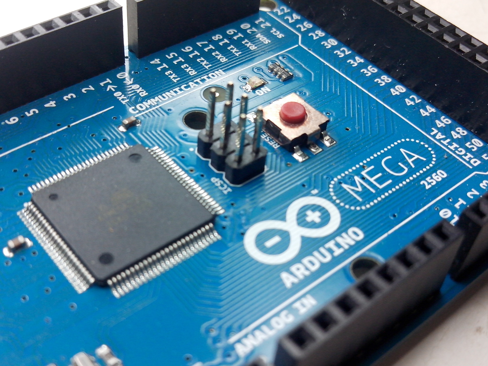

國立臺北科技大學 電資學士班
課程 / 教學
上課時間表
課程標準
導師資訊
課程規劃
本學士班大一至大二不分主修，課程整合電機、電子、資工、光電等領域之基礎課程，獨立專班開設基礎及核心課程，學生亦得至各系修習專業課程，提供學生全方位且極富彈性之修課選擇，以發掘同學之學習性向並培養其研究潛力。
「電機資訊科技」課程
安排電機、電子、資工、光電四系教授，輪流為學生講解各系的特色與職涯發展趨勢，作為學生未來選系的參考。
主修
三年級起由學生依興趣，選定電資學院任一領域（電機工程、電子工程、資訊工程、光電工程）為主修，無任何成績限制規定，讓同學能完全依據自己的興趣及專業學習，但學士班三四年級之班級仍然存在，使同學感情能持續穩固。各專業課程內容涵蓋電腦、通訊、網路、控制、多媒體、訊號處理、積體電路、電力電子、嵌入式系統、平面顯示器等尖端科技。課程整合
本學士班以學院內各課程整合為導向，藉由不斷改進的課程內容、靈活調整的課程設計，學生為本的基礎考量，營造學生獨立、自主、負責、彈性的優良學習環境。本學士班在教學上特別注重理論與實作之整合，及軟體與硬體之結合；並藉由實務專題，培養其創新思考模式與實務經驗，整合各項前瞻性之創新研究，每年公開展示與考評，以培養學生具備實際動手之實務能力。針對高中生相較於高職生，專業科目以前未學過之劣勢。
暑期先修課程
本學士班於入學前開設免學費暑期先修課程，以增進學生電資領域基礎能力。
畢業學分
在學期間，學生亦可依本校學程或輔系辦法修習更多其他不同領域的專業課程，培養第二專長。本學士班畢業學分為133學分，包含下列各項課程：
- 共同必修：33學分
- 專業必修：50學分(電機、電子、資工、光電，擇一領域主修)
- 專業選修：50學分(電機、電子、資工、光電，擇一領域主修)
師資與設備
本學士班由學院內四系教師支援教學與研究指導工作，本學士班直屬為學院，課程內容涵蓋廣泛，遍及各系基礎專業課程，故師資來自各系。本學士班師資陣容堅強，現有專任教師超過一百名，均畢業於國內外第一流大學研究所，極富教育熱忱，實務與理論兼備。教師依專長整合，組織研究群，進行整合型研究計畫之申請與執行。導師部分並依電機、電子、資工、光電四系之順序，輪流擔任導師輔導工作，隨時給予學生適時的輔導及協助，以其學生能依照其個人興趣及志向選定主修學系，並使學生能在其專業領域中發展其特長，並輔導學生繼續升學或就業。學生事務管理部分，由校教官負責輔導。本學士班學生上課實習所需之儀器設備，亦由學院內各系實習實驗室支援，共用教學研究設備以提高使用率，擴展實驗環境，並可深化教學研究成果。藉由本學士班之成立與運作，學院內之所有課程、師資與設備，均能有效整體規劃與整合，達到人盡其才、物盡其用之目標。
教學
本校向以教學嚴謹知名，並以應用科技為研究發展方向。由於本校學生理論基礎與實作能力俱佳，專業能力、敬業精神與團隊意識，普遍獲企業經理人之肯定，畢業生深受企業界喜愛，並成為業界極力爭取的對象。在Cheers雜誌歷年針對國內各大企業最愛學校的調查中，在全國一百六十餘所大學中，本校排名均在前十名。
從前身臺北工專開始，本學院各系多年來培育許多傑出校友，校友向心力極強，協助學校建設發展，形成北科大的特色。本班之各項教學活動均以高品質與精緻化為目標，並實施多項措施提升基礎學科能力及電腦基礎能力，包括實施畢業英文門檻。教學方面為因應科技整合潮流，顧及電資產業發展走向及產業界實際就業市場之需求，即時增修訂本班之必選修課程結構與教材，對學生施以理論與實務並重的完整專業訓練，使其具備各種有關電資領域之設計與應用的專業技能及解決問題的能力，以符合高級技術人才必備的資格。且配合通識課程的規劃，來提升學生之科技與人文素養。同時，為充分尊重學生的受教權及了解老師的教學成效，於每學期期末對每一學科進行教學評量，以作為提升教學的參考依據。
針對學業成績傑出之學生，學院設有「書卷獎」與「進步獎」，獎勵成績優異及進步之各班同學，此外針對實務專題製作之學生，學院設有「金手獎」競賽暨展示會，獎勵競賽得獎之同學，以充分發揮技職教育特色。目前學院中之電機及電子二系已通過「工程及科技教育認證」，取得未來直接考取他國工程師執照與執業的資格，與國際接軌。另外資工及光電系已完成「系科本位課程」，期能透過本位課程發展機制，縮短產業所需人才與學校培育人才之缺口，以落實技職教育務實致用之目標。
主修領域
電資學院各系教師，同時擔任大學部與研究所之教學和研究工作。
- 電機工程系(含碩博士班)：理論與實際並重，教學與研究範圍涵蓋電力工程、電力電子、控制系統、通訊系統、計算機系統五大領域，以培養能執行電機工程相關領域設計與應用之人才為目標。
- 電子工程系(含碩博士班)：發展重點涵蓋計算機工程、無線通訊與訊號處理、電波工程及積體電路與系統等四大領域，並強調計算機、通訊與訊號處理、電波及積體電路設計等技術之整合與應用。
- 資訊工程系(含碩博士班)：發展重點以「多媒體系統」、「網路系統」與「軟體系統」等三大特色研究領域為核心，發展兼具實用性與前瞻性的資訊科技，以培養能直接投入資訊產業的科技人才為教學目標。
- 光電工程系(含碩博士班)：發展重點以「充實光電理論基礎、研習光電應用技術、培育實用光電技術人才，配合產業界需求」為宗旨，課程與教學範圍規劃以光電產業方面技術及人力需求為依據。